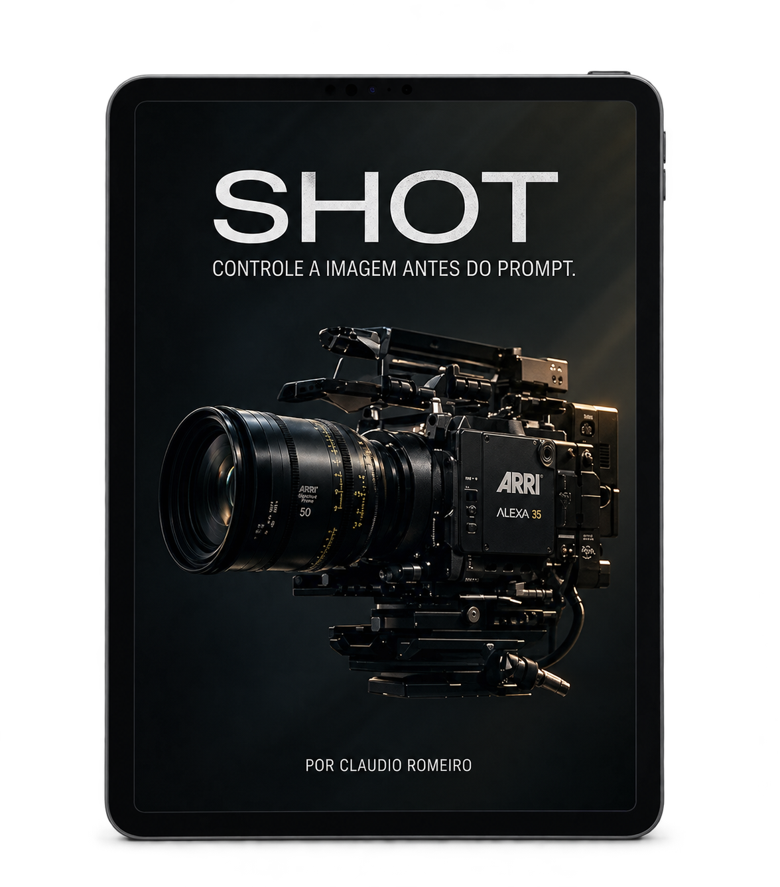
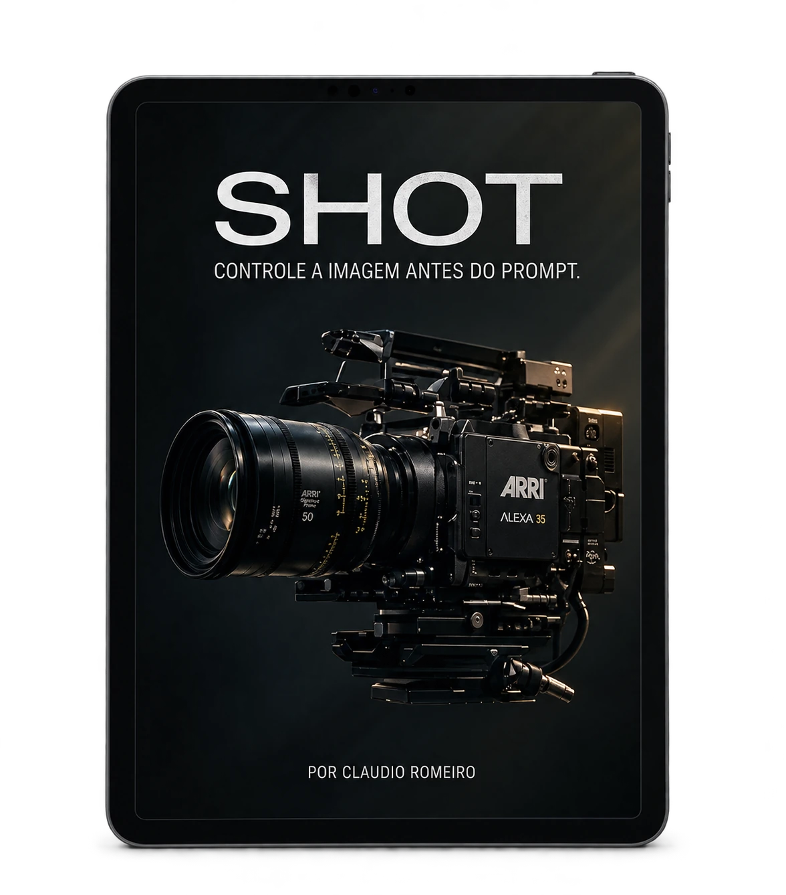
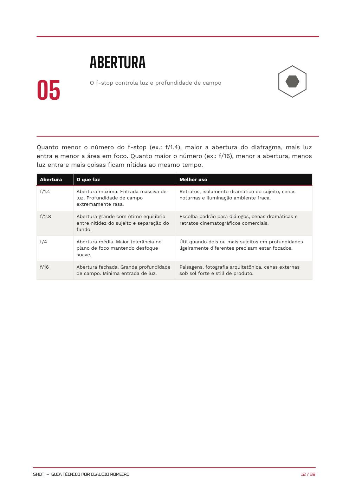
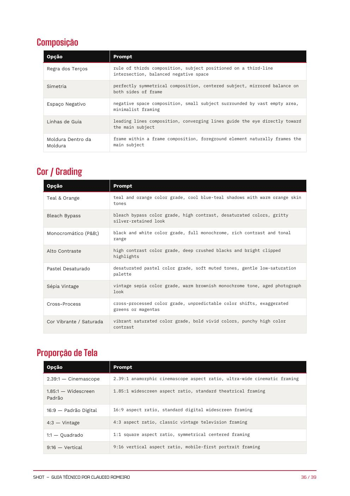

ENTRE NO GRUPO
Clique no botão e entre no grupo do WhatsApp.
SHOT · GUIA TÉCNICO · ED. 2026
Um guia técnico de 39 páginas para transformar intenção visual em instrução precisa — com 12 capítulos, 46 movimentos e estruturas para IMG + VID.

COMO FUNCIONA
Todo o processo de pagamento e envio do guia acontece pelo WhatsApp.
Clique no botão e entre no grupo do WhatsApp.
No grupo, você recebe os dados necessários para realizar o pagamento.
O valor do SHOT é R$ 67,00.
Após a confirmação, enviamos o guia diretamente no WhatsApp privado.
TRANSPARÊNCIA
O produto e o fluxo de entrega, sem promessa escondida.
O site não libera o PDF automaticamente. Pagamento e envio são tratados pelo WhatsApp; após a confirmação, o arquivo é enviado de forma privada.
O PRODUTO
Um sistema técnico para construir prompts com mais controle de câmera, óptica, enquadramento, abertura, luz, movimento, composição, cor e proporção.
Algumas páginas do PDF para você perceber a organização técnica, a profundidade e a aplicação prática do SHOT.



DÚVIDAS RÁPIDAS
Você entra no grupo do WhatsApp, recebe as informações de pagamento, realiza o pagamento e, após a confirmação, recebe o PDF no WhatsApp privado.
Não. Após a confirmação do pagamento, o guia é enviado diretamente no WhatsApp privado.
O guia documenta 12 capítulos, incluindo câmera, lente, ângulo, enquadramento, abertura, luz, movimento, composição, cor/grading, proporção, combinações e catálogo de prompts.
SHOT · ED. 2026
Guia técnico completo para imagem + vídeo.